Introduction to ggplot2
April 29, 2021
1 Background
R has a number of graphing libraries, including base graphics that are installed whenever you install R.
ggplot2, is a graphing library in R that makes beautiful graphs. ggplot2 graph syntax can be formidably complex, with a somewhat steep learning curve.
That being said, learning ggplot2 is worth the effort for a couple of reasons. First, the graphs are beautiful. Second, ggplot2’s syntax, though seemingly arcane at times, forces you to think about the nature of your data, and the ideas that you are graphing. Lastly, a little bit of knowledge about ggplot2 can go a long way, and can build a powerful foundation for future learning.
2 ggplot in 3 easy steps (maybe 2 easy steps)
2.1 aesthetic: what you want to graph (e.g. x, y, z).
2.2 geom: how you want to graph it.
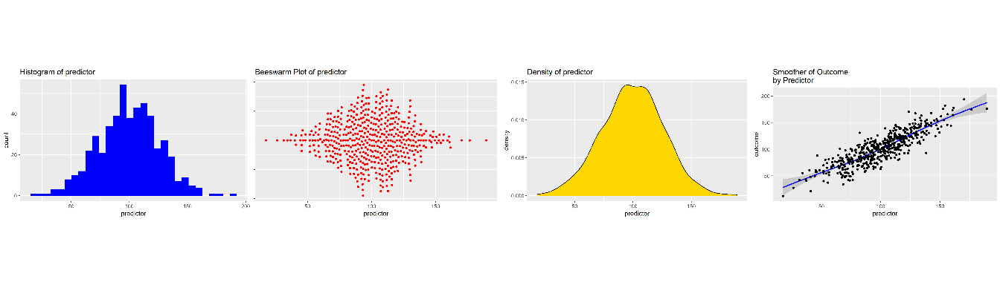
2.3 options: optional titles, themes, etc.
3 A Simple Quick Example
The intent of this tutorial is to build the foundation of this idea that:
A little bit of ggplot can go a long way
and to give you a simple introduction to the idea that any ggplot graph is composed of:
an
aesthetic+a geom or two+other optional elements like titles and themes.
So, as a quick and simple example…
library(ggplot2)
ggplot(my_demo_data, # the data that I am using
aes(x = my_outcome)) + # aesthetic: what I am graphing
geom_histogram(fill = "red", # geom: how I am graphing it
color = "black") # options: fill = "red"; color = "black"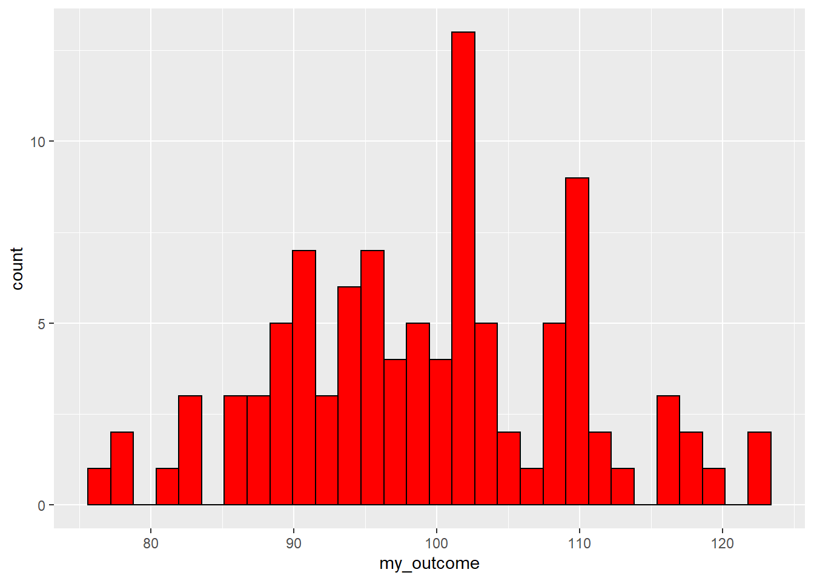
And now, with labels…
ggplot(my_demo_data, # the data that I am using
aes(x = my_outcome)) + # aesthetic: what I am graphing
geom_histogram(fill = "red", # geom: how I am graphing it
color = "black") +
labs(title = "Your Title Here",
subtitle = "Your Subtitle Here",
caption = "A Caption, If You Want One",
x = "my outcome",
y = "count")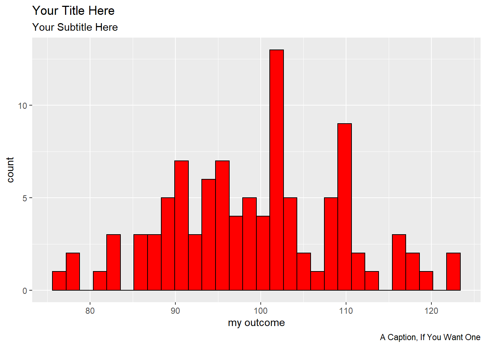
This document is a very brief introduction to the basic ideas of ggplot2. More information about ggplot can be found here. More ggplot2 examples can be found here.
4 Call The Relevant Libraries
You will need a few R libraries to work in ggplot. You may only need library(ggplot2), but some of these other libraries may also be helpful.
library(ggplot2) # beautiful graphs
library(ggthemes) # nice themes for ggplot2
library(ggbeeswarm) # "beeswarm" plots
library(cowplot) # arrrange graphs
library(pander) # nice tables
library(psych) # nice table of descriptive statistics5 Simulated Data
In this example, we simulate some data. But your own learning of ggplot will progress more quickly if you use data that you have access to, on an issue that you care about.
Here are the first few rows of simulated data:
| predictor | outcome | group |
|---|---|---|
| 82.89 | 88.41 | 0 |
| 102.1 | 106.5 | 0 |
| 113.6 | 92.36 | 0 |
| 73.81 | 70.3 | 1 |
| 116.8 | 106.5 | 0 |
| 63.96 | 68.43 | 0 |
| 83.32 | 53.39 | 0 |
| 33.76 | 35.83 | 0 |
| 114.7 | 118.7 | 1 |
| 82.95 | 75.63 | 0 |
6 The Essential Idea Of ggplot2 Is Simple.
There are 3 essential elements to any ggplot call:
- An aesthetic that tells ggplot which variables are being mapped to the x axis, y axis, (and often other attributes of the graph, such as the color fill). Intuitively, the aesthetic can be thought of as what you are graphing.
- A geom or geometry that tells ggplot about the basic structure of the graph. Intuitively, the geom can be thought of as how you are graphing it.
- Other options, such as a graph title, axis labels and overall theme for the graph.
6.1 ggplot2 Starts By Calling The aesthetic
For one variable:
p <- ggplot(mydata, aes(x = ...)) This says there is only one variable running along the horizontal x axis in the aesthetic.
The
p <-...means that we are assigning this graph aesthetic to plot p. We can then add other features to plot p as we continue our work. This iterative nature ofggplot2is one of the things that makes it so powerful. As your workflow and your documents become more complex, you can build a simple consistent foundation1 for your graphs, then add something simple to make a first graph, and a different something simple to make a second graph.
For two variables:
p <- ggplot(mydata, aes(x = ..., y = ...)) This says there are two variables: one for the horizontal x axis; and another for the vertical y axis, in the aesthetic.
6.2 We Then Call The geometry
We can then add different geometries to our plot:
For one variable:
+ geom_density() This says add a density geometry to the graph.
+ geom_histogram() This says add a histogram geometry to the graph.
+ geom_violin() This says add a violin plot geometry to the graph.
+ geom_beeswarm() This says add a beeswarm geometry to the graph.
A beeswarm is a creative layout of points that intuitively lets you understand the distribution of a quantity. The beeswarm geometry requires separate installation of the
ggbeeswarmpackage. You also need to calllibrary(ggbeeswarm)to use this geometry.
For two variables:
+ geom_point() This says add a point (scatterplot) geometry to the graph.
+ geom_smooth() This says add a smoother to the graph.
7 Examples
7.1 One Continuous Variable At A Time
7.1.1 Dotplot
# call ggplot2 where aesthetic is: x uses our predictor variable
p1 <- ggplot(mydata,
aes(x = predictor)) p1 +
geom_dotplot(dotsize = .15) # add dotplot geom
7.1.2 Add Some Options
p1 +
geom_dotplot(dotsize = .15,
fill="red") + # add dotplot geom in red
labs(title ="Dotplot of predictor") # Add title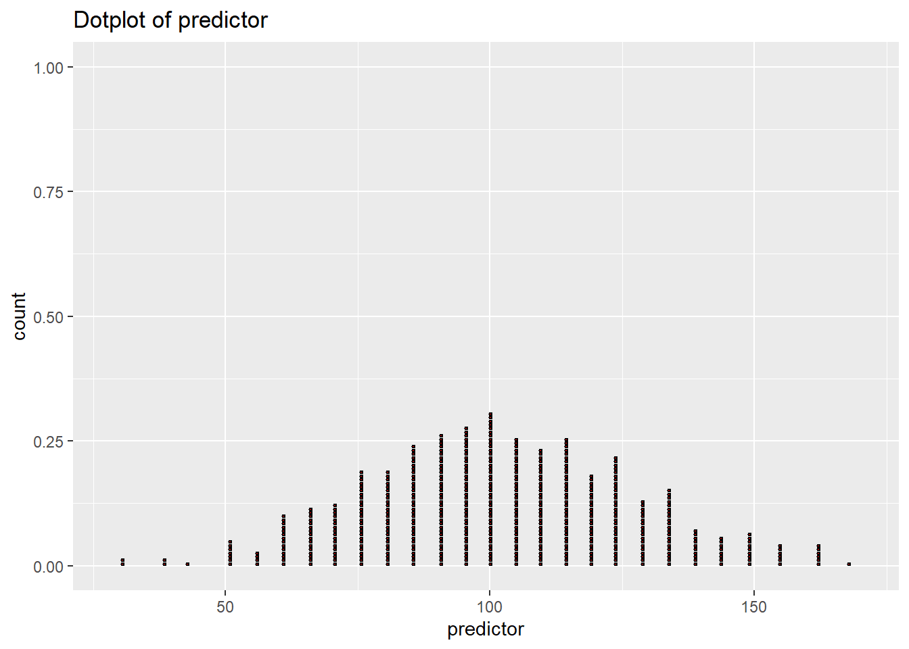
7.1.3 Different Geoms
7.1.3.1 Histogram
p1 + geom_histogram(fill = "blue",
color="black") + # add histogram geom in blue
labs(title ="Histogram of predictor") # Add title
7.1.3.2 Density
p1 + geom_density(fill = "gold") + # add density geom in gold
labs(title ="Density of predictor") # Add title
7.1.3.3 Violin Plot
p2 <- ggplot(mydata,
aes(x = 1, # we need an aesthetic with _x_
y = predictor)) # & _y_
p2 + geom_violin(fill = "purple") +
labs(title ="Violin Plot of predictor") # Add title
7.1.3.4 Beeswarm
p3 <- ggplot(mydata,
aes(x = predictor, # we need an aesthetic with _x_
y = 1)) # & _y_
p3 + geom_beeswarm(color = "red",
groupOnX = FALSE) +
labs(title = "Beeswarm Plot of predictor") + # Add title
theme(axis.title.y = element_blank(),
axis.text.y = element_blank()) # tweak y axis
7.2 One Categorical Variable at a Time
The easiest way to represent a single categorical variable is likely a bar graph.
Here bars represent the count of observations in each group.
p_barchart <- ggplot(mydata,
aes(x = group)) +
geom_bar(fill = "red")
p_barchart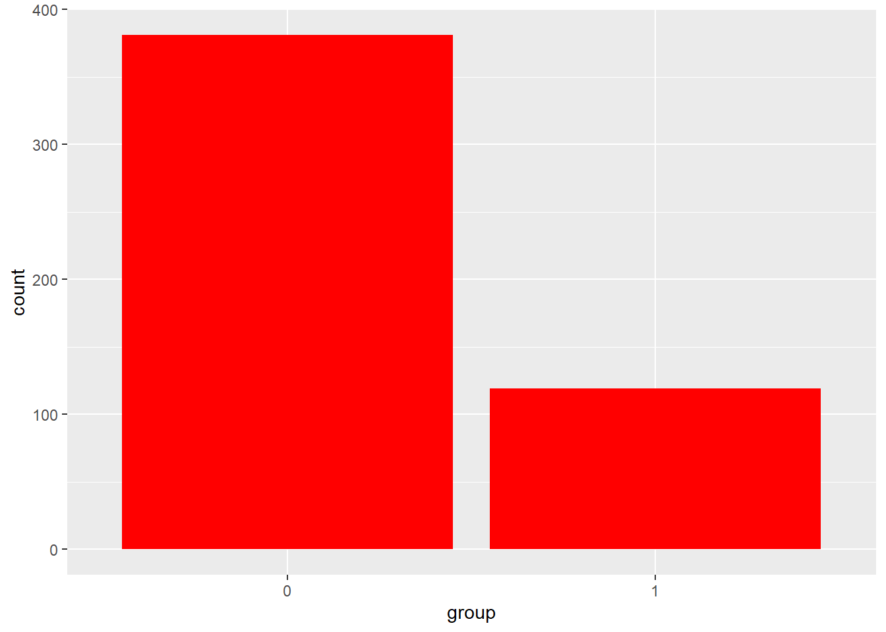
Changing the aesthetic slightly results in a stacked bar chart. Since all groups are stacked in 1 bar, we have to add information about the colors that we want to use to distinguish the groups.
p_stacked_barchart <- ggplot(mydata,
aes(x = 1,
fill = group)) +
geom_bar() +
scale_fill_manual(values = c("red", "blue"))
p_stacked_barchart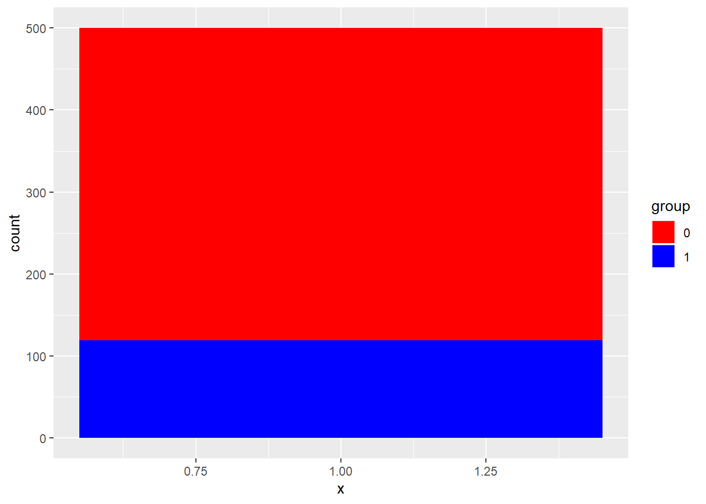
7.3 A Categorical Variable and A Continuous Variable
7.3.1 Barchart
Here bars represent the average value of our outcome variable for members of each group.
p_barchart_of_mean <- ggplot(mydata,
aes(x = group, # slightly different aesthetic
y = outcome)) +
stat_summary(fun = mean, # take the mean of the data
fill = "blue", # fill color
geom = "bar") # we want to summarize data with bars
p_barchart_of_mean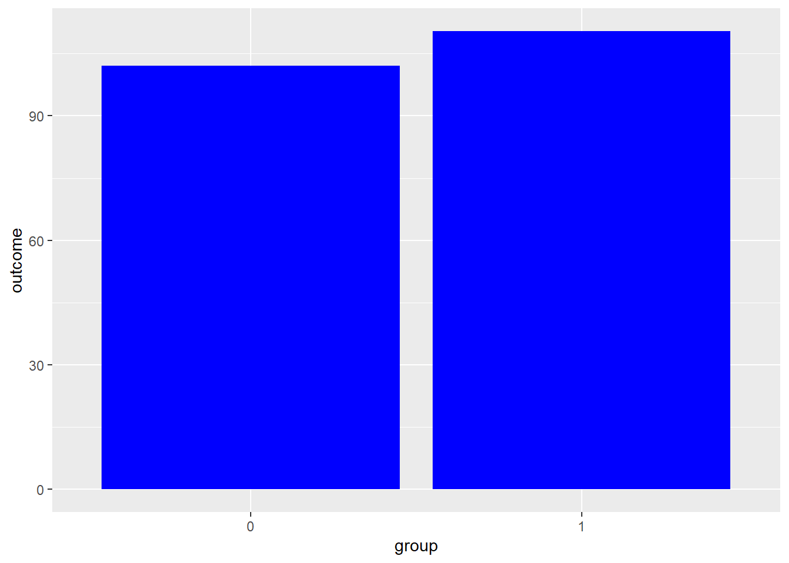
7.4 Two Continuous Variables At A Time
7.4.1 Basic Scatterplot
# call ggplot2 where aesthetic uses both predictor and outcome
p4 <- ggplot(mydata,
aes(x = predictor,
y = outcome)) # set up aesthetic
p4 + geom_point() # add point geom (scatterplot)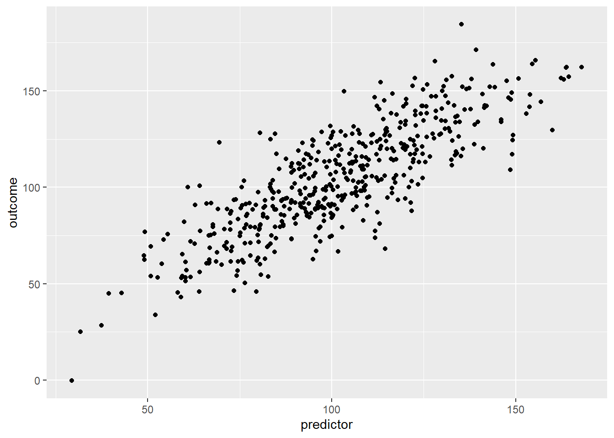
7.4.2 Add Some Options
p4 + # start with basic plot that has only an aesthetic
geom_point(color = "blue") + # add point geom in blue
labs(title ="Scatterplot of Outcome by Predictor") # add title
7.4.3 Try A Smoother
p4 +
geom_smooth() + # add smooth geom
labs(title ="Smoother of Outcome by Predictor") # add title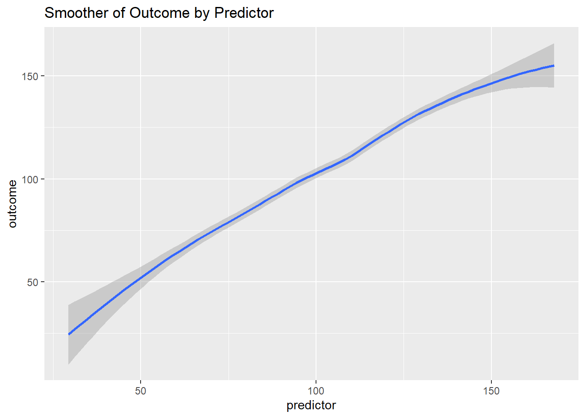
7.4.4 Try A Density Plot
7.4.4.1 Simple Density
p4 +
geom_density2d(color = "blue") + # add density geom
labs(title ="Density Plot of Outcome by Predictor") # add title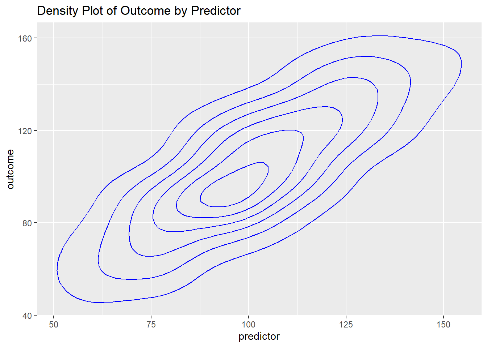
7.4.4.2 Filled Density
While not strictly necessary, the use of
scale_fill_gradientseems to improve the presentation. You can choose your own colors.
p4 +
stat_density_2d(aes(fill = ..level..),
geom = "polygon") + # add filled density geom
scale_fill_gradient(low = "blue",
high = "red") +
labs(title ="Density Plot of Outcome by Predictor") # add title
7.4.4.3 Add Points
p4 +
stat_density_2d(aes(fill = ..level..),
geom = "polygon") + # add filled density geom
geom_point(color = "orange") +
scale_fill_gradient(low = "blue",
high = "red") +
labs(title ="Density Plot of Outcome by Predictor") # add title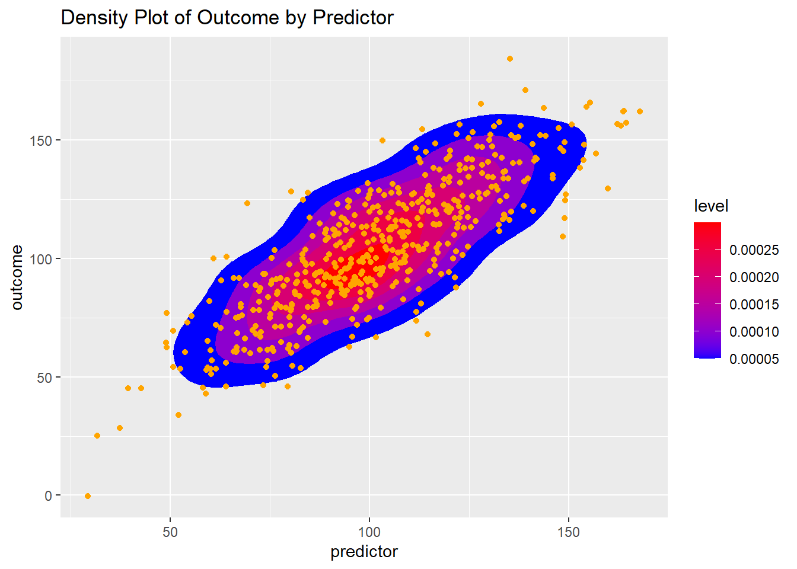
7.4.4.4 Use a Raster Geom Instead
p4 +
stat_density_2d(geom = "raster",
aes(fill = ..density..),
contour = FALSE) +
scale_fill_gradient(low = "blue",
high = "red") +
labs(title ="Density Plot (Raster) of Outcome by Predictor") # add title
7.4.5 Try a Hexagon Geom
geom_hex may be a useful visualization, especially when there is the possiblity of over-plotting due to many many points.
p4 +
geom_hex() +
scale_fill_gradient(low = "blue",
high = "red") +
labs(title ="Hexagon Plot of Outcome by Predictor") # add title
7.4.6 Combine Points and Smoother And Add Some Themes
7.4.6.1 Themes Included With ggplot2
7.4.6.1.1 Default ggplot2 Theme
p4 +
geom_point() + # point geom
geom_smooth() + # add smooth geom
labs(title ="Scatterplot And Smoother of Outcome",
subtitle = "nby Predictor") + # add title
theme_grey() # default theme
7.4.6.1.2 The “minimal” theme
p4 +
geom_point() + # point geom
geom_smooth() + # add smooth geom
labs(title ="Scatterplot And Smoother of Outcome \nby Predictor") + # add title
theme_minimal() # default theme
7.4.6.2 Themes requiring ggthemes()
The themes below make use of
library(ggthemes)which you will need to install.
7.4.6.2.1 “538” Theme
p4 +
geom_point() + # point geom
geom_smooth() + # add smooth geom
labs(title ="Scatterplot And Smoother of Outcome \nby Predictor") + # add title
theme_fivethirtyeight() + # "538"-like theme
scale_color_fivethirtyeight() # "538"-like colors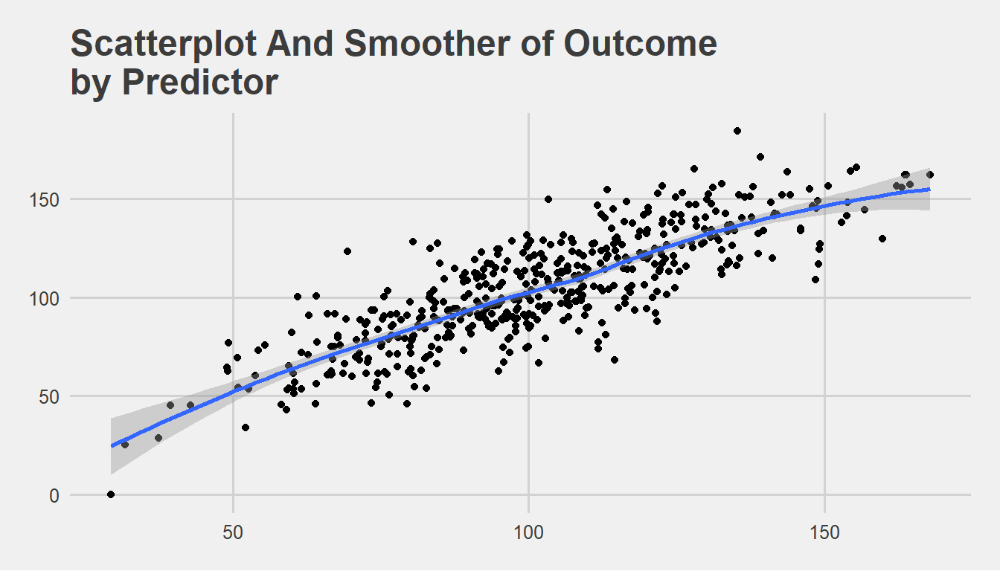
7.4.6.2.2 “Solarized Theme”
p4 +
geom_point() + # point geom
geom_smooth() + # add smooth geom
labs(title ="Scatterplot And Smoother of Outcome \nby Predictor") + # add title
theme_solarized() + # Google Docs theme
scale_colour_solarized() # Google Docs colors
7.4.6.2.3 “Solarized Dark” Theme
p4 +
geom_point() + # point geom
geom_smooth() + # add smooth geom
labs(title ="Scatterplot And Smoother of Outcome \nby Predictor") + # add title
theme_solarized(light = FALSE) + # solarized dark theme
scale_colour_solarized("blue") # solarized dark color palette
7.4.6.2.4 “Economist” Theme
p4 +
geom_point() + # point geom
geom_smooth() + # add smooth geom
labs(title ="Scatterplot And Smoother of Outcome \nby Predictor") + # add title
theme_economist() + # Economist magazine theme
scale_colour_economist() # Economist magazine colors
7.4.6.2.5 “Tufte” Theme
# same plot with theme and geom based on the work of Edward Tufte
p4 +
geom_point() +
geom_smooth(color = "red") +
theme_tufte() +
labs(title ="Scatterplot And Smoother of Outcome \nby Predictor")
7.4.6.2.6 “Google Docs Theme”
p4 +
geom_point() + # point geom
geom_smooth() + # add smooth geom
labs(title ="Scatterplot And Smoother of Outcome \nby Predictor") + # add title
theme_gdocs() + # Google Docs theme
scale_colour_gdocs() # Google Docs colors
7.5 Two Continous Variables And A Third Categorical Variable
7.5.1 Modify the aesthetic to include group.
p5 <- ggplot(mydata,
aes(x = predictor,
y = outcome,
color = group)) # aesthetic includes color by group
p5 + geom_point() +
geom_smooth() +
theme_economist() +
scale_color_economist() +
labs(title ="Scatterplot And Smoother of Outcome \nby Predictor")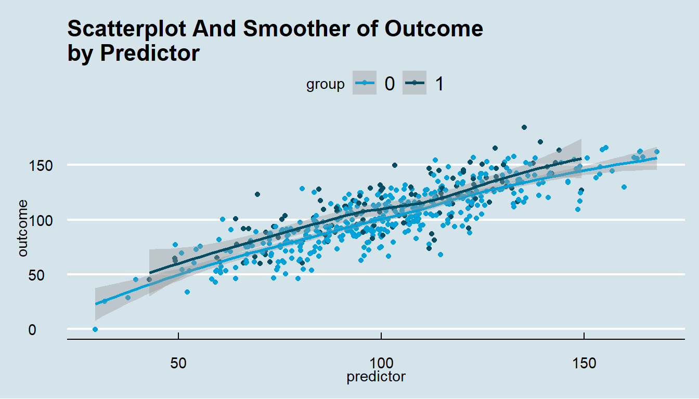
7.5.2 Add facets or “small multiples” by group
p5 +
geom_point() +
geom_smooth() +
facet_wrap(~group) + # facets or "small multiples" by group
theme_economist() +
scale_color_economist() +
labs(title ="Scatterplot And Smoother of Outcome \nby Predictor")
8 There Is A Lot More That Can Be Done With ggplot2
More information can be found at ggplot2.
More ggplot2 examples can be found here.
Graphics made with the ggplot2 graphing library created by Hadley Wickham.
Available online at https://www.umich.edu/~agrogan
Quick Introduction to ggplot2 by Andrew Grogan-Kaylor is licensed under a Creative Commons Attribution-ShareAlike 4.0 International License.
Last updated: April 29 2021 at 16:04
By way of illustration, this foundation could be just an aesthetic (e.g.
aes(...)) alone, or possibly an aesthetic plus a theme (e.g.theme_tufte()), plus axis labels to create a consistent look and feel for your graphs across a report.↩︎